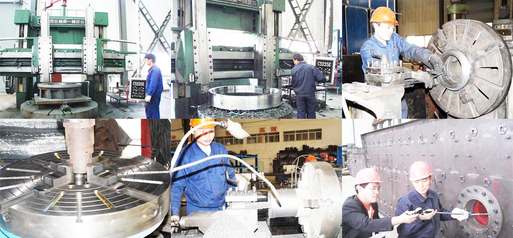

Construction waste crushing production line

Mobile construction waste crushing station for urban construction waste crushing.
Shanghai CAG Mining Machinery Co., Ltd.China
Shanghai CAG Mining Machinery Co., Ltd. is engaged in urban construction waste disposal equipment, mining crusher, processing equipment to develop and produce sales of high-tech enterprises, headquartered in Zhengzhou City, Henan Province, China.
product description
Shanghai CAG Mining Machinery Co., Ltd. is set research and development, production, trade as one of the mining equipment manufacturers. Company to create professional crushing equipment, sand making equipment, processing equipment, mobile crushing plant, construction waste disposal equipment mainly due to the company of "quality first Wing-class struggle" development purposes, until now, the company's products have been in line with international technology , welcomed by the people.

Italy crushing equipment are jaw crusher, impact crusher, impact crusher, Roll crusher, PFC series of energy-saving composite Crusher, PJ powerful vortex impact crusher, cone crusher, hammer crusher , roller stone washing machine;
Sand making equipment with high-efficiency crushing machine, the third generation of Sand, Sand small, new Sand, rod mill crusher, impact crusher, sand production line, sand production line equipment, sand recovery equipment, sand washing machine, sand machine, vibrating screen, feeder, belt conveyor;
Iron ore beneficiation equipment Mineral processing equipment, gold processing equipment, magnetite beneficiation equipment, iron ore beneficiation equipment, hematite mineral processing equipment, molybdenum ore processing equipment, lead and zinc ore dressing equipment, copper ore dressing equipment, ball mill, classifier , magnetic separation, flotation machine, stirred tank and so on.
Mobile crushing plant and construction waste disposal equipment is the company's flagship device. Mobile crushing plant and mobile crushing station is divided into two crawler tire type mobile crushing station. They were divided into jaw (tire / crawler) mobile crushing plant, impact (tire / crawler) mobile crushing plant, cone (tire / crawler) Mobile Crusher, impact (tire / crawler) mobile crushing plant, mobile crushing screening station, etc., construction waste disposal equipment are fixed construction waste crushing station / PJ-based professional production line and construction waste crusher. The equipment is specialized for how to deal with construction waste crushing equipment developed.
Corporate purposes:
Customer first, to win credibility, quality, service quality
service team:
"Customer-oriented", to provide customers with comprehensive services as a whole;
"To serve as the core," to tailor the most valuable products;
"Focus on quality", full-service customers!